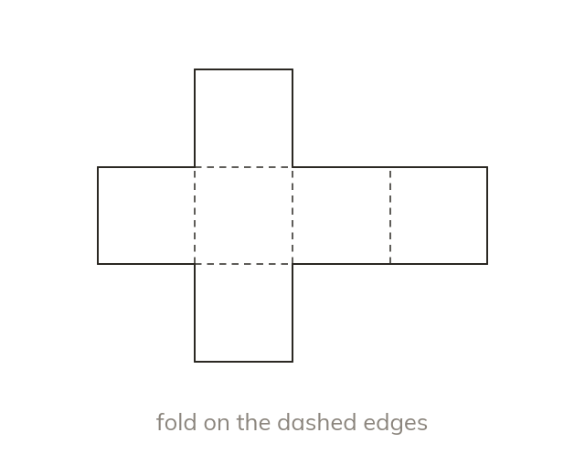
A net folds into a solid
A net is the flat shape that folds up to make a solid. A cube has several different nets, each of six squares joined edge to edge.
Every cereal box starts life as a flat sheet of card, cut and folded. Today we unfold solids into nets, and use them to find how much card a box really needs.
Work down the page at your own pace. Write every answer in your book first, then click to check it.
Read each card, then follow the worked examples one step at a time.

A net is the flat shape that folds up to make a solid. A cube has several different nets, each of six squares joined edge to edge.
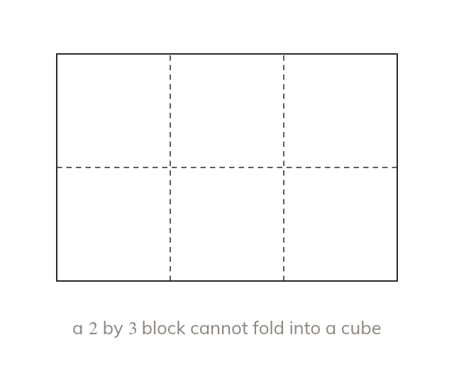
Six squares make a cube only if no faces overlap when folded. Fold each face in your head to test it.
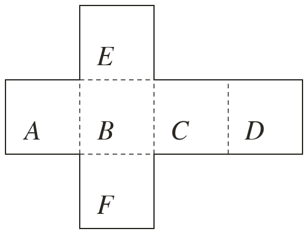
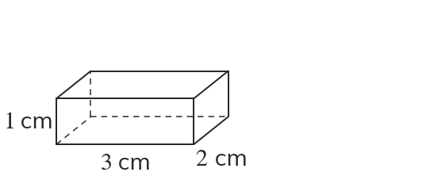
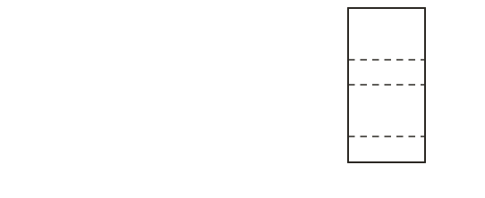
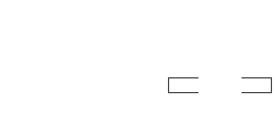
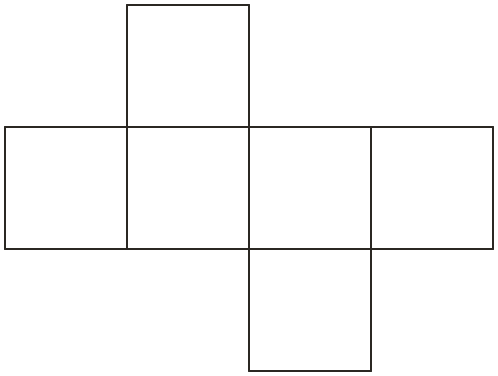
Pick an answer. If it's wrong, the feedback tells you which mistake it was.


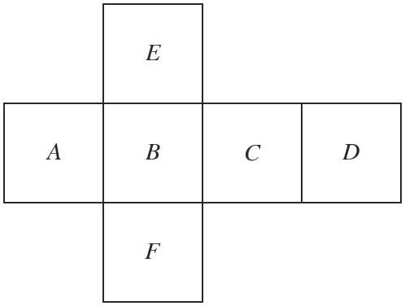
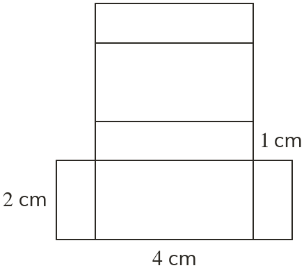
Read each card, then follow the worked examples one step at a time.
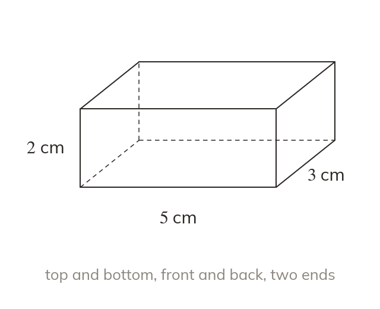
A cuboid has three pairs of identical faces. So its surface area is 2(lw + lh + wh).
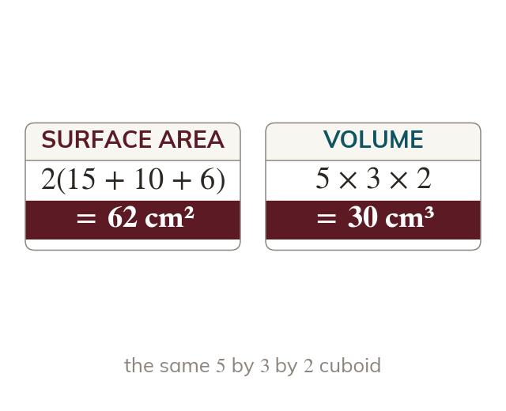
Surface area adds areas, so it is in square units such as cm². Volume multiplies three lengths, so it is in cubic units such as cm³.
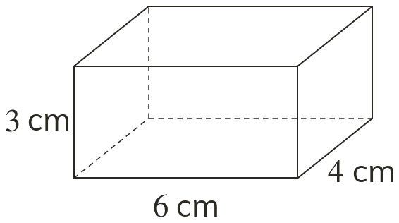
Pick an answer. If it's wrong, the feedback tells you which mistake it was.

Finished? Next lesson: 8.19.2 Volume of Prisms and Cylinders.
For each skill, tap the one that is true for you today. Your Revise pages start with anything you mark Not yet.
Your ratings are saved on this device only.
Log in, then search for a code to practise that skill.
Videos, worksheets and more on each part of this lesson.